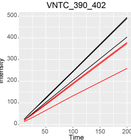

Installation
# install.packages("devtools")
devtools::install_github("kalganem/KRSA")
KRSA 
Kinome Random Sampling Analyzer, or KRSA, is an R Shiny application that automates many of the steps required to analyze PamChip datasets, including peptide filtering, random sampling, heatmap generation, and kinase network generation. This new software makes analyzing kinome array datasets accessible and eliminates much of the human workload that the previous method required. More importantly, KRSA represents the results in a bigger biological context by visualizing altered kinome signaling networks instead of individual kinases.
More info on the PamStation12 platform can be found here: PamGene

Random Sampling Approach
Running Random Sampling

Calculating Mean, Standard Deviations, and Z Scores

Input Files
The user-supplied kinase-peptide association file and the raw kinome array data file are selected as input. The kinase-peptide associations should be based on the known/predicted interactions found in databases like GPS 3.0 and Kinexus Phosphonet. Expected inputs should be formatted as shown in the example files: data/datasets/DLPFC_MvsF_STK.txt and data/sup/FinalMappingSTK.txt. Descriptions of pre-processing requirements, software use, and downstream validation techniques can also be found at the associated project GitHub.
Interface and Use
We wanted to have a user friendly interface so we designed KRSA to be as a dashboard where each tab represents a step of the analysis
Tabs
Step1: Options
This tab lets you preview your uploaded data and select the groups classifications for the input samples can be determined through drop-down menus which allow for clustering of samples within and across chips.
Step2: Stringency
QC steps:
Including minimum exposure intensity > 2 at the last exposure time in the cycle (200 ms) and linearity of the post-wash curve as determined by linear regression (R2 > 0.9), are provided to reduce the total number of peptides evaluated to those meeting the quality control standards desired by the user, with these peptides denoted as s.
Fold Change Threshold:
Fold change thresholds are selected to identify differentially phosphorylated peptides (h, or “hits”) between selected groups. KRSA has a default cutoff of ± 35% as a fold change threshold, though modification should be made in cases where the bar for biological significance is substantially higher or lower. Line plots displaying the phosphorylation intensity in the post-wash phase for each sample are generated to allow for visual inspection of the selected peptides before proceeding to the next step to ensure linearity and sufficient magnitude of phosphorylation for each differentially phosphorylated peptide.

Step3: Iteration
Random Sampling: KRSA performs random sampling of the available peptides on the kinase array to get distributions for associated kinase-peptide interactions. The number of iterations of sampling (i), between 0-5000, is selected by the user, where higher i values increases the stability of the kinase predictions while also increasing the run time of the software. For each iteration i, the same number of peptides as h are randomly selected without replacement from s available peptides (these randomly selected peptides are denoted as h’).
Step4: Results and Step5: Histogram
When the sampling is complete, a distribution for each kinase is determined from the mean number of times each kinase was predicted based on the randomly sampled peptides and the corresponding confidence interval. The number of times a kinase is mapped to h (the differentially phosphorylated peptides) is also determined, and comparison of this kinase count to the mean kinase count from sampling allows us to determine differential kinase activity through a Z-score > 2 (alpha-level = 0.025).
Results of the above calculations are provided in tabular form (Step4: Results), sorted in decreasing order by Z-score. Kinases appearing at the top of this table are those that are most likely to have significant alterations in activity between the control and the experimental groups. This table can be directly saved within the KRSA software for inclusion in publications.
Histograms (Step5) displaying the distribution of mappings for each kinase after random sampling are provided, with the h mapping (vertical line), h’ averages (bars), and h’ confidence interval (gray translucent region) overlaid. Histograms of kinases with h averages outside of the confidence interval in either direction are considered significantly altered and match the kinases shown in the tabular output.

Step6: Heatmap
Heatmap of Differential Phosphorylation: A user-customizable heatmap, generated using the R package ‘gplots2’, visualizing the fold-change differences for each peptide is provided and sorted in descending order. This heatmap can be saved as a PDF or image file directly within the KRSA software.
Step7: Network
A network diagram connecting h kinases to predicted interacting proteins or kinases is generated using the Search Tool for Retrieval of Interacting Genes/Proteins (STRING) database data and graphed with the ‘igraph’ package in R (Szklarczyk et al., 2017). The generated network represents the direct interactions between protein kinases identified from KRSA, as well as additional kinases indirectly connected to the original seed kinases. STRING was used for growing and connecting the kinase network by selectively adding interacting kinases with the highest confidence interaction score. Because of the highly interactive and repetitive structure of kinase activity, we weighted the nodes of the network based on the number of interactions found for each kinase in the network. Confidence thresholds and connection type options are provided to allow for more control over the resultant graph.

For technical issues, please start a new issue on this repo. For biological interpretation questions please email: khaled.alganem@rockets.utoledo.edu